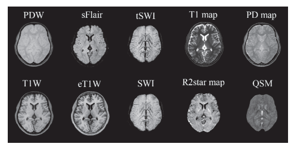
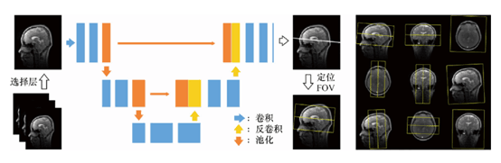
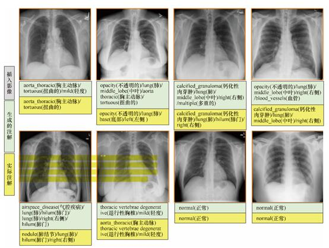

1、智能医学成像系统
随着各种大型医学成像设备在各层级医院的普及，医学影像检查已经成为各种疾病诊断过程中最为重要的检查手段和诊断依据。医学影像相比于生化等其他检查，可以提供病变的位置、结构和功能等重要信息，为疾病的诊断和治疗提供直观的信息和参考。目前，各种医疗成像系统还面临着成像速度较慢、图像质量受患者配合度 影响、成像工作流繁琐等各种挑战。本节将介绍人工智能对医学成像系统各方面的改进
1.1医学成像系统简介
三维医学图像成像过程属于逆问题范畴，即通过在体外采集到的物理信号，重建能够产生该观测信号的人体内生理病理信息的分布情况。这一过程通常是不稳定的，其原因可能有多种，例如，由于扫描时间和剂量的限制而造成的采集信号量不足、原始采集信号中存在着固有噪声、原始信号中掺杂着其他干扰信号、成像设备硬件的不完美性、患者在成像过程中不自主的随机运动等。这些因素使得基于理想数学物理模型的解析重建方法通常无法得到满足临床要求的图像 。为了解决这一问题，传统上需要在重建过程中加入针对图像的特定先验信息作为约束条件，以使重建过程更加稳定。这些简单的约束条件具有良好的通用性，但却无法准确地反映数据的本质特征，对于特定的影像模态与成像模式无法得到最优的重建结果，因此如何设计更好的先验约束，一直是医学影像成像领域的难题之一。
近年来，AI技术的快速发展，特别是其在计算机视觉、图像处理与分析等领域的重要突破，使得国际上的研究人员逐渐认识到将AI技术应用于医学影像成像领域的可能性。AI技术（特别是深度学习技术）摒弃了传统的人工设计的图像先验信息，采用一种完全数据驱动的方式，学习图像 固有的深层次先验信息 。这些学习到的先验信息具有更加专业化的特点 ，将其应用于特定领域中，效果远优于传统的浅层次先验信息 。目前，AI技术与医学影像成像方法的结合已经成为领域内的研究热点，相关的研究成果呈爆发式增长。
1.2 医学成像智能化工作流
进行临床医学影像（如C T、MRI等）扫描需要繁琐的准备工作：扫描医师首先需要确认患者的身份信息，并陪同患者进入扫描间；然后指导患者进行扫描前的准备工作（如摘掉随身携带的金属物等），并进行手动摆位。在正式开始扫描之前还有一系列定位的流程：扫描技师首先需要采集一组患者的定位图像，然后在定位图像上手动设置成像参数和确定扫描视野（field of view，FOV）。上述这些繁琐的、重复性的工作会带来如下几个问题：对于大型医院而言，每天就诊的患者数量非常大，扫描医师一直处于高强度的工作状态，容易产生各种误操作，从而影响扫描图像的质量以及后续疾病诊断的效果；对于基层医院而言，由于扫描医师的经验相对不足、技能水平参差不齐，难以保证获取到患者高质量的医学图像，从而影响疾病的诊断；由于不同医院、不同医师的经验与习惯存在着明显的个体差异，因此扫描得到的医学图像很难具有良好的一致性，为远程会诊、分级诊疗带来了难以解决的困难，同时也给后续基于AI的疾病辅助检测与诊断带来了更大的挑战。 
近年来，AI技术的快速发展使得智能化影像扫描工作流逐渐成为可能。智能化扫描工作流涵盖了患者身 份智能认证、智能语音交互、智能患者摆位、智能化扫描参数设定等功能，贯穿影像扫描的整个流程，其目的在于显著地降低扫描医师的重复工作，提高医院患者的流 通量，并提升患者的就医体验，同时使不同医师采集到的影像数据具有更好的一致性。
在工业界，目前已经有与智能化扫描工作流相关的工作被报道了。德国西门子股份公司研发了智能化辅助扫描工作流（fully assisting scanner technologies，FAST）系统，该智能化工作流利用高精度3D相机实现了精准的患者自动摆位。具体来说，利用红外光技术，3D相机可以获取到患者身体的三维轮廓，从而计算出患者的体型等有用信息，基于这些信息实现等中心点自动定位、扫描范围自动设定等功能，从而有效地降低不必要的辐射剂量，并提高影像扫描的一致性。目前，FAST系统已经应用于西门子商业化的CT设备中。
总体来说，医学影像智能化扫描工作流领域的研发尚处于起步阶段，仅在一些点上实现了突破与创新，整个影像扫描链条尚未完全打通，未来需要继续开展大量具有临床价值的创新研究，从而提升患者的诊疗效果与就医体验，减轻扫描医师繁重的重复性工作负担。
2、医学影像大数据与智能图像分析
医学影像设备的发展和技术进步为医生提供了更多的影像信息，这些信息被用于对疾 病进行诊断和鉴别。但是对大量图像信息的整合和解读也提高了对医生医学影像知识水平的要求，并且也增加了医生的阅片时间。为此，使用计算机辅助诊断技术对医学影像信息进行进一步的智能化分析挖掘，以辅助医生解读学影像 ，成为现代医学影像技术发展的重要需求。
近年来，人工智能成为计算机辅助诊断的研究热点。在过去10年时间里，关于人工智能计算机辅助诊断的研究增加了近10倍。其中，影像组学和深度学习算法在现阶段更是被广泛研究和使用，被应用在医学图像的分类、检测、分割和配准等任务中。相关研究在X射线、CT、PET和MRI等领域取得了重大突破。
近年来，随着算法、算力和数据量的不断提升，在计算机视觉中，深度卷积神经网络已成为首选技术。深度卷积神经网络的优势在于它能够自动学习重要的低级特征（如线条和边缘），并且能够从低级特征中迭代地提取更复杂和更高级的特征（如形状等），其端到端的设计给模型提供了更多可以根据数据自动调节的空间，增加了模型的整体契合度。基于卷积神经网络的深度学习方法在2012年的全球计算机视觉竞赛ImageNet Classification中取得了压倒性的胜利，引起了广泛关注。
人工智能在医学影像应用中也有着一定的挑战 。在医学图像分析中，长期缺乏可公开的训练数据，高质量的标记数据更加稀缺。训练集中的数据或类不平衡也是医学图像分析中的重要问题。尽管存在过度拟合的风险，但通过使用数据增广来生成更多稀有或异常数据的训练图像，可以改善这种数据不平衡效应。同时，还有一项非技术性的挑战是人类对人工智能分析结果的接受程度。机器学习算法在图像识别任务中已超过人类表现，并且它们在医学图像分析中也可能比人类表现更好。然而，当患者被误诊、因AI或AI辅助医疗管理而患病时，就会出现有关法律和道德责任的问题。由于深度学习现在还不具有可解释性，人们无法完全解释黑盒算法的内部工作机制，因此，更加突出了这方面问题的严重性
3、医学影像与自然语言文本处理的结合分析
深度神经网络模型在图像视觉识别中表现卓越。主流的、应用效果较好的深度神经网络计算机视觉模型大多基于有监督的训练过程，而有监督的训练过程依赖于大规模高质量的有标注数据集。现有的大规模图像数据集通过AMT等大量人工操作完成图像标注。在医疗影像的辅助诊疗等应用场景下，众多的研究机构和公司投入了大量的资源用于构建更大规模的有标注的医疗影像数据集。
然而，在医疗影像研究方面，通过人工方式对医疗影像进行标注构建训练数据集具有非常大的挑战性，标注者需要具备相当程度的医学专业知识，不能像普通的图像标注任务 一样进行众包。另外，医疗影像的标注工作要求更加细致，病灶的人工识别过程往往需要仔细阅片，并尽可能地发现和准确标注微小病灶，标注速度慢，标注成本高，因此很多情况下标注的准确度往往不令人满意。
现代医院已经逐步完成了信息化改造，并逐步向更加标准化 、数字化的方向发展，医疗影像归档与通信系统中不仅包含大量的医疗影像，也包含与其相关的各种文本报告，这些文本报告中含有相当多的专业诊断信息。使用自然语言处理技术从这些文本中提取有价值的标签，对相关的影像进行标注，是自动化生成有标注影像数据集的一种有效途径。